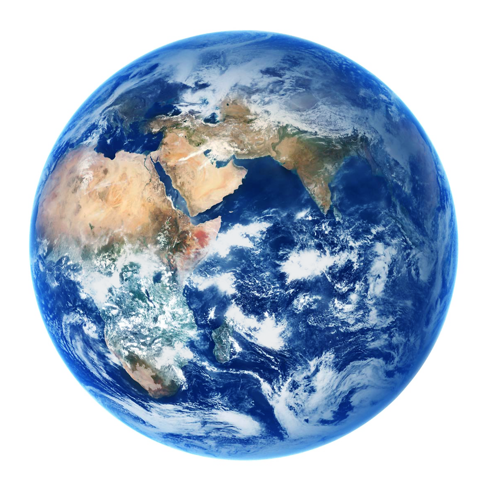
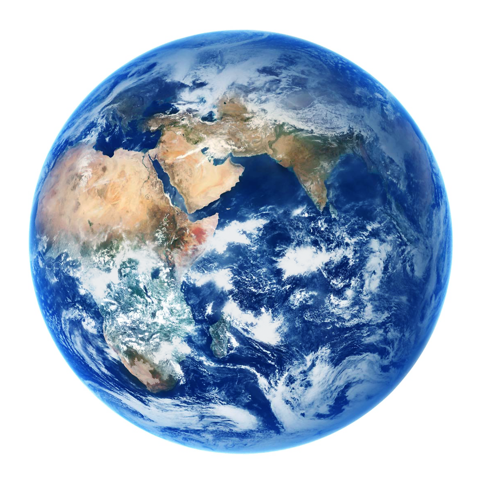

Coffee,
a Global Urban Perspective
A cup of coffee may seem mundane, but it holds stories of empire, trade winds, migration, and the modern city.
Move the mouse over the picture below.
 

From Coffee Farms to Global Cities: A Trade & Culture Network
A cup of coffee may seem mundane, but it holds stories of empire, trade winds, migration, and the modern city.
Move the mouse over the picture below.


A humble bean begins in the sun-soaked highlands, but travels through machines, markets, and meetings—until it lands in our hands.
Move the mouse over the picture below.


It is the medium of modernity - a mobile substance that connects distant geographical locations with intimate everyday life.
In its journey, we read not just flavor, but movement, meaning, and the rhythms of city life.
From farm to cup, coffee flows through unequal global systems —
shaped by trade routes, value chains, and cultural consumption patterns.
Through cafés, coffee becomes a way of dwelling —
a third space between work and home,
between global flows and grounded identity.
In Melbourne, coffee is culture. It's a social thread woven into everyday life.
Image by Brother Baba Budan
From the highlands of Ethiopia to a quiet side-street café,
coffee journeys not only through supply chains — but through cultures, cities, and the spaces in between.
It begins as a raw commodity, yet transforms into a ritual: a gesture of pause, a symbol of taste, a habit wrapped in meaning.
What flows through ports and warehouses re-emerges in plazas, apps, kitchen counters, and lingering conversations.
In every city, coffee sketches a different negotiation — between labor and leisure, routine and resistance, sameness and local invention.
To trace coffee is to trace the hidden architectures of modern life:
the rhythms that order our time, the inequities that structure our markets,
and the desires that filter through cup after cup.
Coffee, in the end, is not just consumed — it is lived.
- Arnould, E.J. and Thompson, C.J., 2005. Consumer culture theory (CCT): Twenty years of research. *Journal of Consumer Research*, 31(4), pp.868–882.
- Bookman, S., 2014. Brands and urban life: Specialty coffee, consumers, and the co-creation of urban café sociality. *Urban Studies*, 51(13), pp.2957–2972.
- Bourdieu, P., 1984. *Distinction: A social critique of the judgement of taste*. Cambridge, MA: Harvard University Press.
- Dolbec, P.-Y., Nathanson, A. and De Rond, M., 2022. A practice perspective on market evolution: How craft and commercial coffee firms expand practices and change positions. *Marketing Theory*, 22(4), pp.451–471.
- Fischer, E.F., 2021. Quality and inequality: Creating value worlds with Third Wave coffee. *Socio-Economic Review*, 19(1), pp.111–131.
- Gao, X., Liu, L. and Chen, Z., 2025. Cafe geography tells how locations vary across retail models. *Urban Retail Review*. (Forthcoming)
- Gereffi, G., Humphrey, J. and Sturgeon, T., 2005. The governance of global value chains. *Review of International Political Economy*, 12(1), pp.78–104.
- Oldenburg, R., 2023. *The Great Good Place*. Reprinted & annotated edition. (Excerpts: Classic Coffeehouses, Personal Benefits, Introduction, Toward Better Times)
- Warde, A., 2005. Consumption and theories of practice. *Journal of Consumer Culture*, 5(2), pp.131–153.

Co-Producer
Email:
ixxiiris@163.com
Github:
ixxiiris
Co-Producer
Email:
chengsy76@yeah.net
Github:
meimao76

Co-Producer
Email:
xxxxx
Github:
TARTAR4600